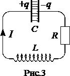
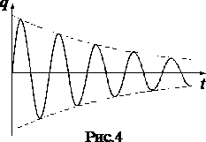
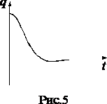

Свободные затухающие колебания

Всякий реальный контур обладает активным сопротивлением. Энергия, запасенная в контуре, постепенно расходуется в этом сопротивлении на нагревание, вследствие чего свободные колебания затухают. Для цепи (рис.3) из обобщенного закона Ома следует $$IR=-\frac{q}{C}-L\frac{dI}{dt}.\; (8)$$
Разделив это уравнение на L и воспользовавшись определением силы тока получим $$\ddot{q}+\frac{R}{L}\dot{q}+\frac{1}{LC}q=0.\; (9)$$
Введя обозначение \(\beta =\frac{R}{2L}\), уравнению (9) можно придать вид $$\ddot{q}+2\beta \dot{q}+w^{2}_0q=0.\; (10)$$Последнее уравнение совпадает с дифференциальным уравнением затухающих механических колебаний, решение которого имеет вид $$q=q_{m}e^{-\beta t}cos(\breve{\omega }t+\alpha ).\; (11)$$
Таким образом, частота затухающих колебаний \(\breve{\omega }\) меньше собственной частоты \(\omega _{0}\). При R=0 выражение (11) переходит в (4).
Аналогично предыдущему разделу можно получить зависимости от времени напряжения на конденсаторе и силы тока в цепи.

График функции (11) изображен на рис.4. Графики для напряжения и силы тока имеют аналогичный вид. Время \(\tau =1/\beta =2L/R\), за которое амплитуда заряда уменьшается в e раз называется временем релаксации.
Затухание колебаний принято характеризовать логарифмическим декрементом затухания $$\lambda =ln\frac{a(t)}{a(t+T)}=\beta T.\; (12)$$
Здесь a(t) – амплитуда соответствующей величины (q, U или I). Логарифмический декремент затухания обратен числу колебаний \(N_{\beta }\), совершаемых за время, в течение которого амплитуда уменьшается в e раз: $$\lambda =\frac{1}{N_{\beta }}.\; (13)$$
Колебательный контур часто характеризуют его добротностью Q, которая определяется как величина, обратно пропорциональная логарифмическому декременту затухания: $$Q=\frac{\pi }{\lambda }=\pi N.\; (14)$$
Можно показать, что при слабом затухании добротность механической колебательной системы с точностью до множителя \(2\pi\) равна отношению энергии, запасенной в системе в данный момент, к убыли этой энергии за один период колебаний. $$Q=-2\pi \frac{W}{\Delta W}. \; (15)$$
В заключение отметим, что при \(R^{2}/4L^{2}\geq 1/(LC)\), т.е. при вместо колебаний происходит апериодический разряд конденсатора (рис.5). Сопротивление контура \(R_{K}=2\sqrt{\frac{L}{C}}\), при котором колебательный процесс переходит в апериодический, называется критическим.
